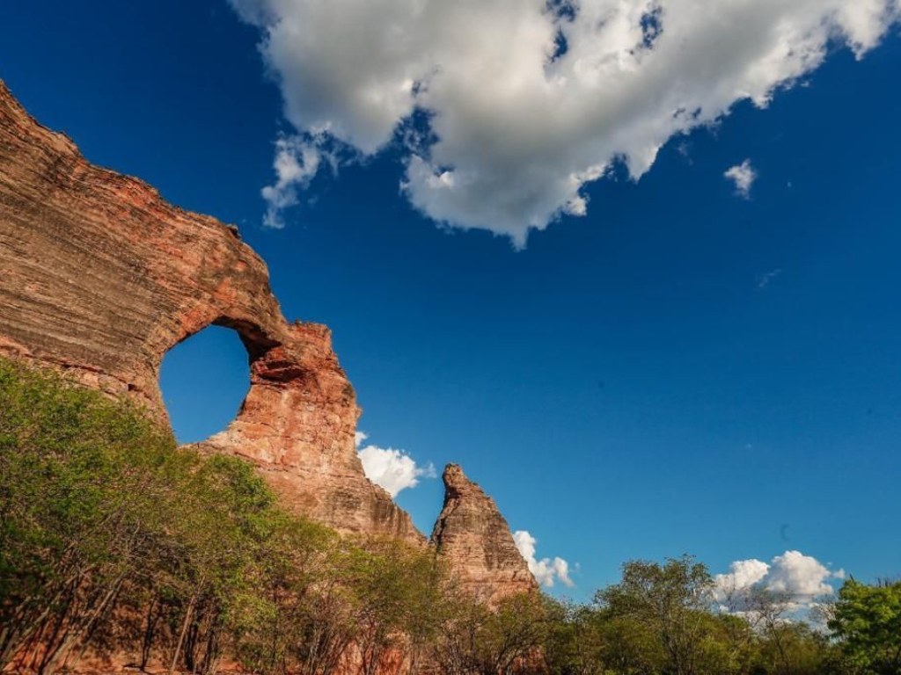

O Piauí é um estado localizado na região Nordeste do Brasil, conhecido por suas paisagens naturais, riqueza histórica e forte tradição cultural. Sua capital, Teresina, é a única capital nordestina que não está localizada no litoral. O estado possui importantes atrações turísticas, como o Parque Nacional da Serra da Capivara, famoso por suas pinturas rupestres e sítios arqueológicos. A cultura piauiense é marcada pelas festas populares, pela música regional e pela culinária típica. A economia do Piauí é baseada na agricultura, na pecuária, no comércio e no turismo.

Voltar